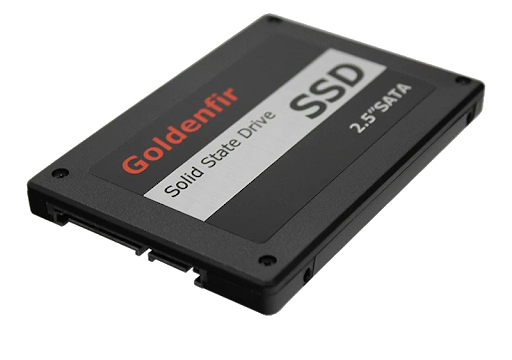
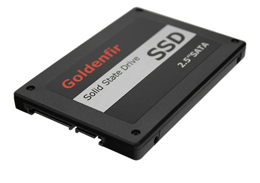

|
| PSU(Power Supply) |
||||||||||
|---|---|---|---|---|---|---|---|---|---|---|
| PSU Nedir? | Güç kaynağı bilgisayarın iç yapısında bulunan sistem parçalarını çalıştırıp gerekli enerjiyi eşit miktarlarda dağıtabilmek için kullanılan iç donanım birimidir. Günümüzde bilgisayarlardan ziyade enerji dağılımına ihtiyaç duyan diğer cihazlarda da güç kaynağı kullanılmaktadır. |
|||||||||
| PSU(Güç Kaynağı) Çalışma Prensibi | Bilgisayarların ve diğer cihazların içerisinde yer alan, genelde metal kasa ile yerleştirilmiş güç dağılımını sağlayan bu iç donanım birimleri içerisinde transformatör ve elektronik devreler ile gerilim değerlerini ölçer ve doğru akımı parçalara iletir. Şebekeden bilgisayara gelen elektrik akımını düşürerek her parçanın ihtiyacı kadar elektrik gönderimi sağlar. Güç kaynakları olmasa bilgisayarlar çalışmayacağı gibi, sağlıklı çalışmayan bir güç kaynağı da bilgisayar parçalarını bozacaktır. | |||||||||
| PSU neye göre seçilir? | Bilgisayar kasasında bulunan tüm parçaların güç harcama kapasiteleri vardır. Seçilen PSU tüm parçaların güç isteklerini tam karşılayacak şekilde seçilmelidir. Özellikle ekran kartı bilgilerinin içerisinde önerilen psu watt değeri verilir. Eğer seçeceğiniz bu PSU değerinin üzerinde olursa bilgisayarınız hem performanslı hem de uzun ömürlü olur. | |||||||||
HDD SSD   |
||||
|---|---|---|---|---|
| HDD ve SSD Nedir? | ||||
| HDD ve SSD farkı | Kısaca SSD'ler veri transferinde yüksek hızlara çıkarken, depolama olarak ise düşüktür. HDD'ler ise depolama olarak yüksek olsa da SSD'ye göre daha düşük hızda çalışırlar. | |||
| HDD Çeşitleri | Harddisk çeşitleri: |
|||
| Bilgisayar Kasası |
||||||||||
|---|---|---|---|---|---|---|---|---|---|---|
| Bilgisayar Kasası Nedir? | Bilgisayar kasası; anakart, işlemci, ram, harddisk, ekran kartı, ses kartı, cdrom ve disket sürücüsü gibi tüm parçalarını fiziksel darbelerden ve dış etkenlerden koruyan bir kutudur. Metal veya plastik olabilir. |
|||||||||
| Bilgisayar Kasası ne işe yarar? | Kasa bilgisayar bileşenlerini bir arada tutan dikdörtgen şeklinde olan metal veya plastik bir kutudur. Kasa içerisinde bilgisayarı çalıştırmaya yarayan bir takım ekipmanlar vardır. Bu ekipmanlar sayesinde kasa, monitör bir bütünlük oluşturarak bilgisayarda herhangi bir işlem yapılmasına olanak sağlamaktadır. Bu ekipmanların başında anakart gelmektedir. |
|||||||||
| Bilgisayar kasası neye göre seçilir? | Bilgisayar kasası, içerisinde kullanılan psu, anakart vs. parçaların uyumluluğu ile seçilmelidir. Özellikle anakart için büyük önem taşır. ATX anakartın en az ATX destekleyen bir kasaya ihtiyaç duyar. PSU'nun konumu'da önemli unsurlar arasındadır. Parçaları koyabileceğiniz bir kasaya ihtiyaç duyarsınız. | |||||||||